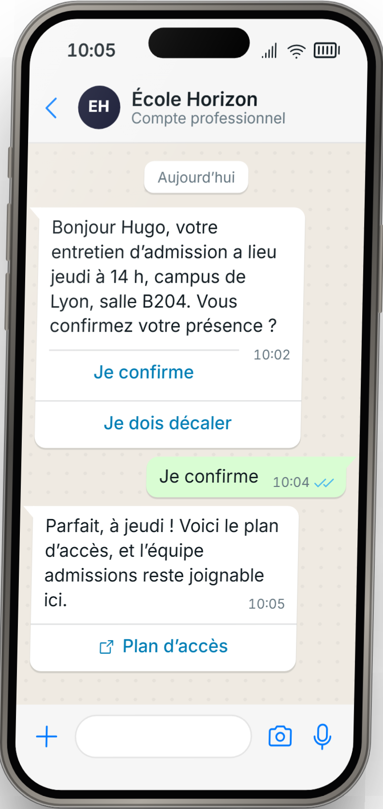
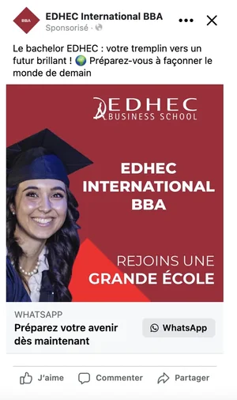
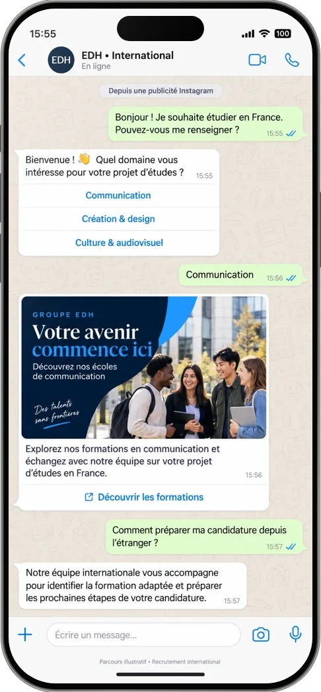
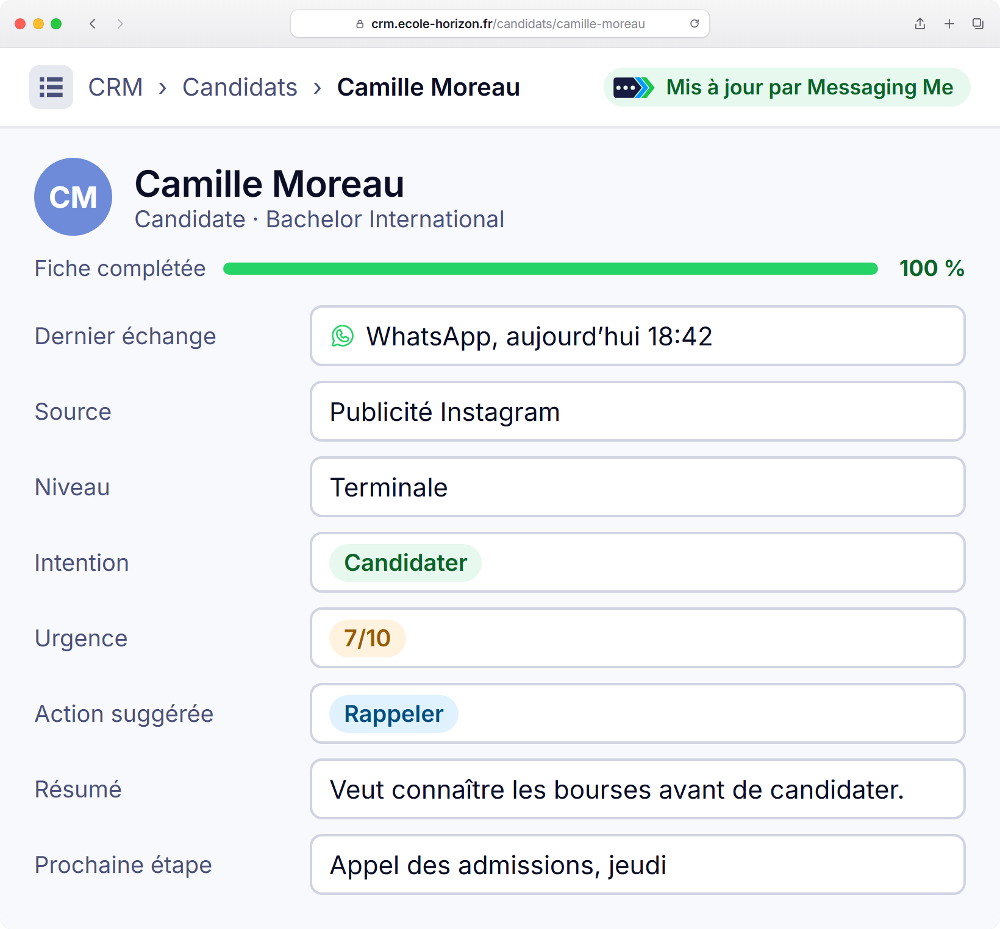
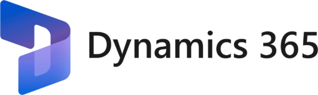
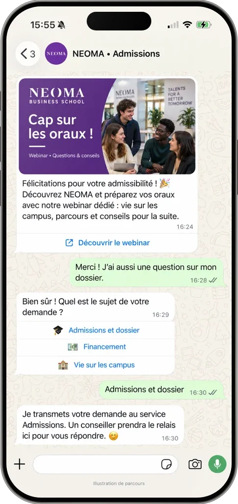

Le guide pour transformer chaque intérêt en conversation, et chaque conversation en candidature.
Dans ce guideComprendre l’APILa stratégieClick-to-WhatsAppCRM & relancesIA puis humainCe qui ne marche pas

app.messagingme.frSimplement conversationnel.
ÉditoRecruter sur WhatsApp
Vos candidats sont sur WhatsApp. Votre école peut les y rejoindre, à condition d’être utile.
Entre un salon étudiant et une inscription, il se passe des mois. Pendant ces mois, vos e-mails se perdent entre deux newsletters et vos appels tombent sur des messageries. Vos candidats, eux, ouvrent WhatsApp des dizaines de fois par jour.
WhatsApp est devenu l’endroit où l’on parle de son orientation : avec ses amis, avec ses parents, et de plus en plus avec les écoles. Les candidats y sont prêts : 83 % des Français se disent ouverts aux messages des entreprises, quand ils sont pertinents.
La condition est là : pertinents. Ce guide ne vous apprend pas à envoyer plus de messages. Il vous apprend à envoyer le bon, au bon moment : quand un candidat vient de télécharger une brochure, de s’inscrire à une journée portes ouvertes, d’être déclaré admissible. Puis à faire vivre la conversation, avec votre IA, vos équipes et vos ambassadeurs.
Un message utile au bon moment vaut mieux que dix campagnes.
L’équipe Messaging MeConseil, plateforme et accompagnement conversationnels
Sommaire
01Comprendre WhatsApp03
02Le compte API, pièce par pièce04
03Les chiffres05
04La stratégie : un objectif par conversation06
05Le bon moment, la bonne valeur07
06Acquérir avec Click-to-WhatsApp08
07Ils le font déjà09
08L’automatisation CRM10
09Démarrer sans CRM11
10Relancer sans harceler12
11L’IA d’abord, l’humain ensuite13
12Ce qui ne marche pas14
✓Votre check-list de démarrage15
Messaging Me · Livre blanc 2026
02
01 · Comprendre WhatsAppRecruter sur WhatsApp
01
Trois WhatsApp. Un seul recrute à grande échelle.
Même logo, même bulle verte, trois outils très différents. Avant de lancer une campagne d’admissions, il faut savoir lequel vous parle de votre CRM, de vos publicités et de vos équipes, et lequel s’arrête au téléphone d’un conseiller.
Application
WhatsApp
pour les particuliers
L’application de tous les jours, entre proches
Aucun nom d’entreprise vérifié
Rien ne se branche sur vos outils
Un téléphone, une personne
Application
WhatsApp Business
pour la petite structure
Gratuite, avec réponses rapides et étiquettes
Le candidat voit un numéro, pas le nom de l’école
Diffusions limitées aux contacts qui ont enregistré votre numéro
Pas de lien avec votre CRM : ni industrialisation, ni automatisation
Celle qu’il vous faut
Plateforme
API WhatsApp Business
pour recruter à l’échelle
Campagnes vers des milliers de candidats qui ont donné leur accord
Branchée sur votre CRM, vos formulaires et vos publicités
Toute l’équipe admissions sur un seul numéro, l’IA en premier relais
Écrire en premier passe par un modèle validé par Meta, facturé au message
Le mécanisme
Vous écrivez en premier ? C’est un message modèle, validé par Meta avant son envoi.
Le candidat vous répond ? Une fenêtre de 24 heures s’ouvre pour échanger librement, avec votre équipe ou votre IA.
À retenir
L’application Business dépanne une petite équipe ; elle ne porte pas une campagne de recrutement.
Seule l’API se branche sur votre CRM et parle à des milliers de candidats.
Un modèle validé pour ouvrir, puis 24 heures d’échange libre après chaque réponse.
Messaging Me · Livre blanc 2026
03
02 · Le compte APIRecruter sur WhatsApp
02
Ce qu’il faut pour écrire à des milliers de candidats.
L’API WhatsApp Business ne s’achète pas comme une application : elle s’ouvre chez Meta, au nom de votre école. Quatre pièces, et une cinquième en option : la coche bleue.
1
Un portefeuille Meta Business
Le compte d’entreprise de l’école chez Meta (business.facebook.com). Faites-le vérifier : c’est la vérification d’entreprise qui ouvre les envois à grande échelle.
2
Un numéro dédié
Un numéro libre, qui ne sert pas déjà dans l’application WhatsApp. Ou celui de votre application WhatsApp Business, qui peut y rester.
3
Un nom d’affichage
Le nom de l’école, tel que le candidat le lit en haut de la conversation. Meta l’examine et l’approuve.
4
Un moyen de paiement
Meta facture chaque message, selon sa catégorie. Sans moyen de paiement, les modèles sont bloqués. Votre carte bleue, ou Messaging Me peut payer et avancer vos frais.
Les limites d’envoi : on part de 250, on monte vite.
Nombre de contacts différents joignables par 24 heures, hors réponses dans une conversation ouverte.
250
2 000
10 000
100 000
Illimité
Nouveau portefeuille
Après la vérification d’entreprise
Montée automatique : des messages de qualité, et la moitié du palier utilisée sur 7 jours
La coche bleue
EH
École Horizon
Compte officiel
Illustration
Elle signale un compte officiel, à côté du nom. Meta l’accorde sur demande, après examen : 30 jours sur la plateforme, portefeuille vérifié, double authentification et nom d’affichage approuvé.
Pas indispensable pour démarrer vos campagnes.
À retenir
Vérifiez l’entreprise chez Meta dès le départ : c’est elle qui fait passer de 250 à 2 000.
Un numéro dédié à l’école, jamais le portable d’un conseiller.
La coche bleue est un bonus, pas un prérequis.
Source : Meta, documentation WhatsApp Business Platform (« Messaging limits », « Official Business Accounts »), octobre 2026.
Messaging Me · Livre blanc 2026
04
03 · Les chiffresRecruter sur WhatsApp
Vos candidats sont déjà là. Et ils n’attendent qu’un message utile.
N°1
WhatsApp, marque la plus forte du monde en 2026.1
Indice 41,5, devant Samsung (41,4).
56 M
d’utilisateurs de WhatsApp en France.2
891
ouvertures de l’application par mois et par utilisateur : près de 30 par jour.5
La demande est en avance sur les marques.
83 %
des Français sont ouverts aux messages pertinents des entreprises3
50 %
des entreprises le croient3
96 %
de taux de lecture.
×4,5
de clics pour Air France sur WhatsApp que par e-mail.4
24 h
d’échange libre après chaque réponse d’un candidat.
Sources. 1. YouGov, Best Brand Rankings 2026, indices BrandIndex du 1er janvier au 31 décembre 2025 (article du 9 février 2026). 2. Meta, 2026. 3. Enquête Kantar pour Meta, citée dans l’étude BCG et Meta du 9 avril 2026. 4. Étude BCG et Meta, 9 avril 2026. 5. Meta, Top Trends 2026 (891 ouvertures par mois).
05
04 · La stratégieRecruter sur WhatsApp
04
Avant d’écrire, fixez l’objectif.
Une conversation sans objectif s’arrête au premier « merci ». Chaque message sert une intention, et une seule : c’est elle qui décide du texte, du bouton, de qui reprend la main et de ce que vous mesurerez.
L’objectifLe boutonLa suiteOn mesure
1Prendre un rendez-vousEntretien d’admission, visite du campus, appel avec un conseiller.
Choisir un créneau
Le rendez-vous part dans l’agenda de l’équipe ; le rappel arrive la veille.
Rendez-vous pris, présents
2Faire reprendre par une personneUn dossier complexe, un financement, un candidat international.
Parler à un conseiller
La conversation arrive à l’équipe ou à un ambassadeur, avec tout son historique.
Délai de reprise, conversations traitées
3Renvoyer vers votre siteLa candidature en ligne, la page du programme, le dépôt d’une pièce.
Déposer ma candidature
Une relance part si la candidature n’est pas finalisée.
Clics, candidatures déposées
4Inscrire à un événementJournée portes ouvertes, webinar, journée d’immersion.
Je m’inscris
La confirmation, le rappel la veille, le plan d’accès ou le lien du webinar.
Inscrits, présents
5Qualifier pour orienterNiveau d’études, programme visé, campus, financement.
TerminaleBac +2
Le candidat part dans le bon parcours, et sa fiche CRM se complète toute seule.
Fiches complétées, répartition par programme
La règleUn message, un objectif, un bouton.
À retenir
Écrivez l’objectif avant d’écrire le message.
Un seul bouton principal : celui de l’objectif.
Décidez à l’avance qui reprend, et comment vous saurez que ça a marché.
Messaging Me · Livre blanc 2026
06
05 · Ce qui marcheRecruter sur WhatsApp
05
Le bon moment. Ou quelque chose qui a de la valeur.
Un message WhatsApp qui marche répond à l’une de deux questions : que vient de faire le candidat ? Que puis-je lui apporter ? S’il ne répond à aucune des deux, il ne part pas.
Coller à un événement du candidat
Il télécharge une brochure
Voici la brochure du Bachelor. Une question sur le programme ou sur l’admission ?
Il s’inscrit à une journée portes ouvertes
Votre place est réservée samedi à 10 h. On vous envoie le plan d’accès la veille ?
Son dossier est incomplet
Il manque votre relevé de notes : vous pouvez le déposer ici, en deux minutes.
Il est déclaré admissible
Félicitations ! Voici comment préparer vos oraux, et qui peut répondre à vos questions.
Il est admis
Bienvenue ! Les trois étapes pour finaliser votre inscription.
Apporter quelque chose de précieux
Renvoyer la brochure
Celle qu’il a téléchargée, sur le canal qu’il ouvre vraiment.
Inviter
Journée portes ouvertes, webinar, journée d’immersion : une invitation, une réponse en un geste.
Partager un contenu exclusif
Un témoignage d’étudiant, une vidéo du campus, un guide comme celui-ci.
Rappeler une échéance
La date limite de candidature, l’heure de l’oral, le jour de la rentrée.
200+
participants au webinar que NEOMA a promu sur WhatsApp auprès de ses admissibles : une invitation au bon moment, une réponse en un geste. Cas client présenté par Messaging Me, mai 2026.
À retenir
Chaque message part d’une action du candidat, ou apporte quelque chose.
Il dit pourquoi il arrive maintenant.
Il se termine par une question ou un bouton : on attend une réponse.
Messaging Me · Livre blanc 2026
07
06 · Click-to-WhatsAppRecruter sur WhatsApp
06
Acquérir : de la pub à la conversation, en un geste.
Une publicité Click-to-WhatsApp, c’est une pub Facebook ou Instagram dont le bouton ouvre une conversation WhatsApp avec votre école. Pas de page d’atterrissage, pas de formulaire : le candidat arrive avec un message déjà écrit, et votre scénario lui répond dans la seconde.
1La pub

Un bouton WhatsApp, à la place d’un formulaire.
→
2La conversation

Le candidat arrive avec un message déjà écrit ; l’assistant le qualifie en quelques boutons.
→
3La reprise

La fiche arrive dans le CRM, analysée, avec la prochaine action pour l’équipe admissions.
72 h
de messages offerts après le clic : vous ne payez que la pub.
1 écran
La pub, le scénario qui répond et les résultats, au même endroit dans Messaging Me.
11 pays
où le Groupe EDH promeut ses écoles avec des campagnes Click-to-WhatsApp.
Publicité EDHEC International BBA et conversation du Groupe EDH : cas clients présentés par Messaging Me, mai 2026. La fiche CRM est un exemple.
Messaging Me · Livre blanc 2026
08
07 · Ils le font déjàRecruter sur WhatsApp
07
Ils le font déjà.
Trois écoles, trois façons d’engager la conversation.
NEOMA Business School
Renforcer la préférence aux moments décisifs.
Des campagnes WhatsApp entre l’admissibilité et les oraux, avec une orientation des demandes vers les services compétents.
Des campagnes Click-to-WhatsApp et des messages marketing pour promouvoir les écoles et formations dans 11 pays.
30 000+conversations engagées avec les candidats
11comptes gérés dans une seule plateforme
EDHEC Business School
Accompagner le choix des étudiants et de leurs parents.
Des campagnes push marketing sortantes sur WhatsApp pour valoriser l’école et partager des contenus exclusifs aux étapes clés de l’orientation.
Objectif : renforcer la préférence au moment du choix d’école.
Le point commun : chaque message arrive au moment où le candidat a une décision à prendre.
Source : cas clients présentés par Messaging Me, mai 2026.
Messaging Me · Livre blanc 2026
09
08 · L’automatisation CRMRecruter sur WhatsApp
08
L’automatisation CRM : le moteur de ce qui marche.
Votre CRM sait où en est chaque candidat. L’automatisation, c’est laisser chaque changement d’étape déclencher le bon message WhatsApp, puis faire revenir la réponse dans la fiche. Personne n’envoie rien à la main, et personne n’oublie personne.
1Une étape change dans le CRMBrochure téléchargée, dossier complet, admissible.
→
2Le bon modèle part sur WhatsAppCelui de cette étape, au nom du candidat.
→
3Le candidat répondL’IA ou l’équipe enchaîne, dans la même conversation.
→
4L’analyse revient dans la ficheIntention, urgence, prochaine action : on sait qui appeler.
et la boucle recommence à l’étape suivante
Ce que votre équipe voit dans le CRM, après chaque conversation. Exemple.
L’analyse de chaque conversation arrive dans HubSpot, et vos listes HubSpot deviennent des audiences de campagne.
L’analyse de chaque conversation arrive dans Salesforce : votre équipe sait qui appeler, et quand.

Par l’API ou un webhook : votre CRM prévient Messaging Me à chaque changement d’étape.
Même principe : un appel à l’API ou un webhook au changement d’étape, ou un export importé.
Messaging Me · Livre blanc 2026
10
09 · Démarrer sans CRMRecruter sur WhatsApp
09
Pas de CRM branché ? Commencez quand même.
Non.
Faut-il relier son CRM pour démarrer ?
Le branchement fait gagner du temps quand les envois deviennent quotidiens. Pour vos premières campagnes, une liste suffit.
Exportez
Une liste de votre CRM ou de votre outil d’admissions, en fichier CSV : nom, mobile, programme, date utile.
Importez
Dans Messaging Me, avec un tag par population : « admissibles-2027 », « jpo-novembre ».
Lancez
Une campagne avec un modèle validé par Meta, au rythme d’envoi que vous choisissez.
L’exemple
Tous les candidats convoqués aux entretiens.
Vous importez la liste avec la date de chaque entretien. Messaging Me envoie seul un rappel 48 heures avant, avec le lieu et deux boutons : « Je confirme » et « Je dois décaler ». Une date reportée ? Le rappel suit la nouvelle date.
Une seule condition
Le consentement. N’importez que des candidats qui ont accepté d’être contactés sur WhatsApp, par une case à cocher sur vos formulaires.
À retenir
Un fichier suffit pour une première campagne.
Un tag par population, une campagne par moment.
Branchez le CRM quand les imports deviennent hebdomadaires.
Messaging Me · Livre blanc 2026
11
10 · Les relancesRecruter sur WhatsApp
10
Relancer sans harceler.
Une relance n’est pas le même message envoyé deux fois. C’est un autre angle, au bon moment, et elle s’arrête dès que le candidat répond.
J 0
L’invitation
Journée portes ouvertes samedi : on vous garde une place ?
J +3
Pas de réponse : un autre angle
Léa, étudiante en 2e année, sera là samedi pour répondre à vos questions.
Oui !
Il répond : la veille, le rappel
À demain 10 h ! Voici le plan d’accès, et le numéro de l’accueil.
Silence
Toujours rien : on s’arrête
Aucun troisième message. Le candidat reviendra par lui-même, ou pas.
1
On s’arrête dès que le candidat répond.
2
Un autre angle à chaque fois : témoignage, vidéo, question simple.
3
Une relance sans réponse, puis le silence.
4
Après un STOP, plus rien. Jamais.
5
Au-delà de 24 heures sans réponse, seul un modèle validé par Meta peut partir : chaque relance se prépare comme un vrai message.
Dans Messaging Me, le délai « Pas de réponse » d’une question, le bloc « Attente » et les rappels avant une date font tout cela sans personne. Un STOP est respecté automatiquement.
À retenir
Une relance, c’est un nouvel angle, jamais le même message.
La réponse du candidat arrête tout.
Le silence est aussi une réponse : on le respecte.
Messaging Me · Livre blanc 2026
12
11 · L’IA puis l’humainRecruter sur WhatsApp
11
L’IA d’abord. Vos équipes ensuite. Vos ambassadeurs aussi.
Le bot hybride, c’est quoi ?
Une IA répond tout de suite, jour et nuit, à partir de vos contenus : programmes, frais, admissions, logement. Elle annonce qu’elle est une IA.
Dès qu’une question sort de ce qu’elle sait, ou qu’un candidat demande à parler à quelqu’un, elle passe la main à un humain, et ne reprend pas la parole d’elle-même.

NEOMA. L’assistant invite les admissibles au webinar des oraux, répond, puis transmet une question au service Admissions : un conseiller prend le relais.Cas client présenté par Messaging Me, mai 2026.
IA
L’IA
Répond en quelques secondes, à toute heure
S’appuie uniquement sur vos contenus
Annonce qu’elle est une IA
ADM
Vos équipes
Reprennent l’admission, le financement, les cas particuliers
Trouvent la conversation dans « À traiter »
Répondent depuis le numéro de l’école
★
Vos ambassadeurs
Des étudiants avec un accès à la boîte de réception
Vous leur attribuez les conversations
Ils répondent avec leurs mots
À retenir
L’IA répond à ce qu’elle sait, et seulement à ça.
Un humain reprend dès que la question compte vraiment.
Rien ne convainc mieux un futur étudiant qu’un étudiant.
Messaging Me · Livre blanc 2026
13
12 · Ce qui ne marche pasRecruter sur WhatsApp
12
Ce qui ne marche pas : le marketing pur.
WhatsApp n’est pas un e-mail de plus. C’est une conversation, ou ce n’est rien.
✕À éviter
Une promotion envoyée à toute la base, sans raison
Un fichier acheté, ou importé sans accord
« Un message par semaine, pour rester présent »
Un message auquel on ne peut pas répondre
Tout automatiser, sans personne derrière
Relancer quelqu’un qui a dit STOP
✓À faire à la place
Un message qui suit une action du candidat
Des candidats qui ont coché la case WhatsApp
Un message quand il y a quelque chose à dire
Une question ou un bouton, à chaque fois
L’IA d’abord, une personne quand ça compte
Un STOP respecté, définitivement
Le test, avant chaque envoi
1
Pourquoi lui, et pourquoi maintenant ?
2
Peut-il me répondre en un geste ?
3
Le lirais-je jusqu’au bout, à sa place ?
!
Pourquoi c’est grave. Chaque candidat qui bloque ou signale votre numéro fait baisser sa qualité aux yeux de Meta. Et la qualité de vos messages décide de vos limites d’envoi.
Messaging Me · Livre blanc 2026
14
Pour démarrerRecruter sur WhatsApp
Votre check-list de démarrage.
Un portefeuille Meta Business, vérifiéLa clé des envois à grande échelle
Un numéro dédié à l’écoleLibre, ou celui de votre application Business
Un nom d’affichage approuvéLe nom que lira le candidat
Un moyen de paiementVotre carte bleue, ou Messaging Me avance vos frais
Une case « WhatsApp » sur vos formulairesBrochure, candidature, journée portes ouvertes
Vos trois premiers modèlesInvitation, rappel, dossier incomplet
Les contenus de votre IAProgrammes, admissions, frais, logement
Qui reprend la mainAdmissions, conseillers, ambassadeurs
Parlons de vos recrutements.
Scannez, et écrivez-nous sur WhatsApp : c’est la meilleure démonstration.